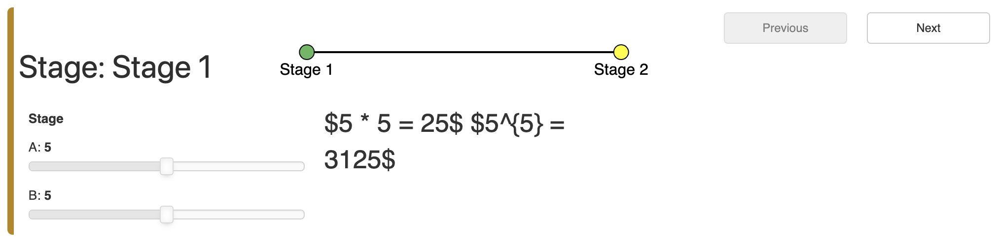

we will discover how to connect multiple such panels into a Pipeline to express complex multi-page workflows where the output of one stage feeds into the next stage.
# To start using a Pipeline, let us declare an empty one by instantiating the class:
pipeline = pn.pipeline.Pipeline()
# the Parameterized class will also need to designate at least one of the methods as an “output”.
A Pipeline will use this information to determine what outputs are available to be fed into the next stage of the workflow.
In the example below, the Stage1 class has two parameters (a and b) and one output (c). The signature of the decorator allows a number of different ways of declaring the outputs:
param.output(): Declaring an output without arguments will declare that the method returns an output that will inherit the name of the method and does not make any specific type declarations.param.output(param.Number): Declaring an output with a specific Parameter or Python type also declares an output with the name of the method but declares that the output will be of a specific type.param.output(c=param.Number): Declaring an output using a keyword argument allows overriding the method name as the name of the output and declares the type.
It is also possible to declare multiple outputs, either as keywords or tuples:
- param.output(c=param.Number, d=param.String)
- param.output(('c', param.Number), ('d', param.String))
class Stage1(param.Parameterized):
a = param.Number(default=5, bounds=(0, 10))
b = param.Number(default=5, bounds=(0, 10))
ready = param.Boolean(default=False, precedence=-1)
@param.output(('c', param.Number), ('d', param.Number))
def output(self):
return self.a * self.b, self.a ** self.b
@param.depends('a', 'b')
def view(self):
c, d = self.output()
return pn.pane.LaTeX('${a} * {b} = {c}$\n${a}^{{{b}}} = {d}$'.format(
a=self.a, b=self.b, c=c, d=d), style={'font-size': '2em'})
def panel(self):
return pn.Row(self.param, self.view)
stage1 = Stage1()
stage1.panel()
Then we add this stage to our Pipeline using add_stage method.
# The add_stage method takes the name of the stage as its first argument, the stage class or instance as the second parameter, and any additional keyword arguments if you want to override default behavior.
pipeline.add_stage('Stage 1', stage1)
#
class Stage2(param.Parameterized):
c = param.Number(default=5, bounds=(0, None))
exp = param.Number(default=0.1, bounds=(0, 3))
@param.depends('c', 'exp')
def view(self):
return pn.pane.LaTeX('${%s}^{%s}={%.3f}$' % (self.c, self.exp, self.c**self.exp),
style={'font-size': '2em'})
def panel(self):
return pn.Row(self.param, self.view)
# Make sure set a precedence for c
stage2 = Stage2(c=stage1.output()[0])
stage2.panel()
pipeline = pn.pipeline.Pipeline(debug=True)
pipeline.add_stage('Stage 1', Stage1())
pipeline.add_stage('Stage 2', Stage2)
pipeline
